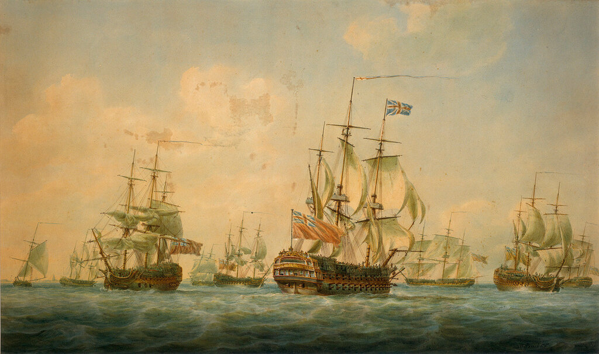
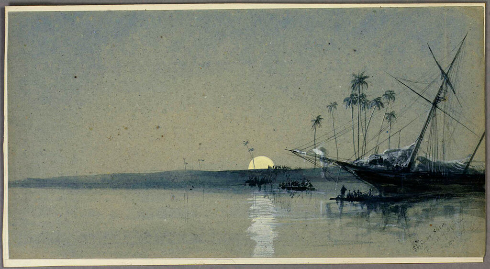
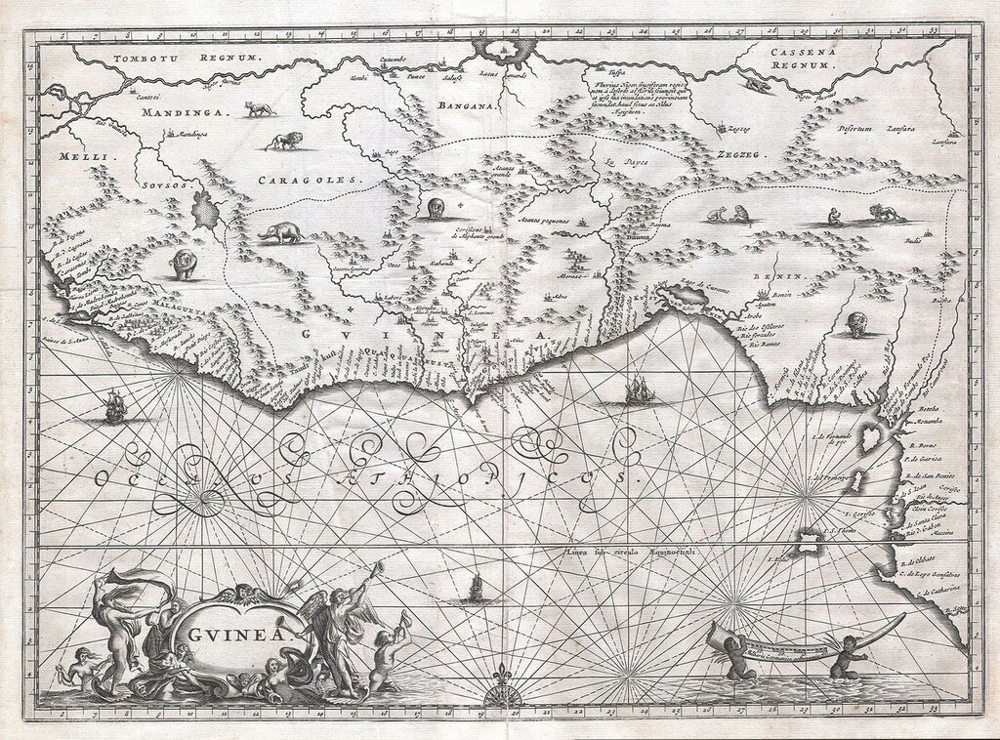
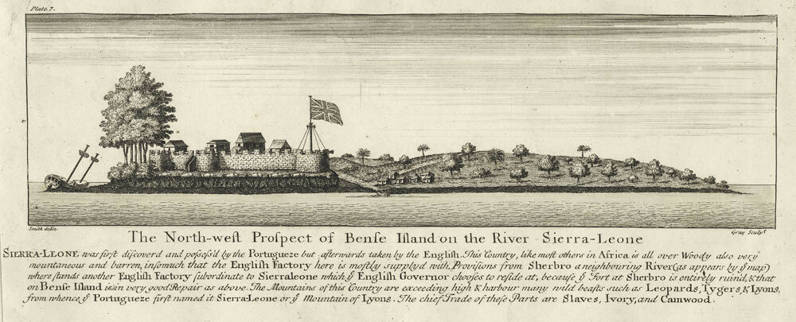

Корабли Королевской Африканской компании и их маршруты
Как повсюду на свете ― и тут
каждый ломтик пространства велит
столь же тщательно выбрать маршрут,
как тропинку в саду Гесперид.
И.Бродский. Перед прогулкой по камере

Корабли английских торговых компаний в Спитхеде. 1797. Акварель, Nicholas Pocock. Royal Museums Greenwich
На мой взгляд, мы делаем большую ошибку, когда сравниваем практику использования английского флота на Западном берегу Африки с Ост-Индией, например, или с Вест-Индией, или с Америками. В Африке существовали особенности, которых не было в других рагионах. На Западном берегу европейцы практически не устраивали поселений, были лишь форты и купеческие фактории. Европейцы не везли туда женщин. Практически не смешивались с местным населением, за исключением, возможно, португальцев. Не стремились в глубь континента, кроме, может быть, нескольких одержимых паганелей. Они не могли подчинить большие территории, уничтожив местного деспота и завладев его тапочками: на побережье Африки не было централизованных общественных структур. Проще говоря, до поры до времени европейцы на западном берегу Африки занимались не завоеванием территорий, а торговлей. Поэтому не следует сравнивать, скажем, Королевскую Африканскую компанию с другими, похожими по названию структурами.

Перевозка рабов у западного побережья Африки. Художние Mather, John Robert (1860) National Maritime Museum, Гринвич, Лондон.
На протяжении всего XVII века число служащих компании и охранявших их солдат ни разу не превышало 330 человек, а большую часть времени вообще ограничивалось одной сотней (Кеннет). Даже в конце XVII века общее число белых, живших между реками Сенегал и Калабар едва ли было больше нескольких тысяч. Для наиболее густо населенной части – Золотого берега – приводятся такие цифры: 368 голландцев, 208 англичан, 85 датчан и 85 брандербуржцев, всего менее 700 человек. Из факторий Западной Африки Компания не могла самостоятельно даже золото перевозить, для этого использовались корабли английского военного флота. Ее форты были слабо защищены, требовалась постоянная поддержка кораблей военного флота из метрополии.

Карта Западной Африки английского картографа John Ogilby. (1670)
Ошибочным является утверждение, что Королевская Африканская компания имела мощный флот. По короткому маршруту Англия – Западная Африка– Англия вывозили собираемую компанией слоновую кость, воск, красильное дерево, кожи, древесные смолы, - все, что из-за объемного характера невыгодно было везти вместе с рабами в Вест-Индию, а затем уже в Англию. За период с 1686 по 1688 гг. интенсивность судоходства по короткому маршруту не превышала двух судов в год в Гамбию и одного – в Сьерра-Леоне.

А в периоды войн все работы по сбору перечисленных выше товаров осуществляло одно судно в год. Переход, который занимал 5-7 недель в один конец, компания старалась приурочить к переходам ист-индиаменов, или же он осуществлялся под охраной конвойных кораблей военного флота. Но конвои следовали обычно по треугольному маршруту, так что если приходилось возвращаться от Африки в Англию напрямую, то такие переходы совершались одиночными судами. Нечего говорить, что они становились легкой добычей приватиров. Так, из девяти судов, совершавших переход по маршруту Англия-Западная Африка-Англия с 1702 по 1704 гг. только трем удалось завершить его благополучно; один пропал без вести, а пять других были захвачены французскими приватирами на обратном переходе.
Не таким простым, как представляется, был и так называемый треугольный маршрут. Очень редко такой маршрут совершало одно судно. До 1689 года Компания вообще арендовала суда только до Вест-Индии. Обычно деньги за рабов плантаторы выплачивали не сразу, и найти груз сахара для Англии тоже удавалось не всегда быстро. Кроме того, сахар, имбирь, хлопок или индиго стали в конце семнадцатого века совсем не выгодным товаром, цены на них в Лондоне сильно упали. Гонять же корабли из Вест-Индии в Англию с одним балластом было накладно. Общую картину на этом маршруте дает пример за 1686 год: в этом году из Лондона в Африку отправились тридцать два судна. Из них три вернулись в Англию, 23 ушли с грузом рабов в Вест-Индию, два – в Вирджинию, два остались для решения задач материального обеспечения у побережья Африки.
Эти данные показывают, что Королевской Африканской компании не было никакого резона иметь собственные суда. Дело как правило ограничивалось арендой. У Компании не было собственных судостроительных мощностей, и она не приобретала вновь построенных судов, ограничиваясь уже бывшими в употреблении. Правда, среди этих кораблей, был такой легендарный, как Falconbergh. Судно водоизмещением 320 тонн с экипажем 50 человек в мирное время (65 – в военное), оно восемь раз совершило плавание по треугольному маршруту в период между 1691 и 1704 годом, доставив в Вест-Индию 3500 рабов.
Скажем несколько слов о конвойной службе английского военного флота, которая обеспечивала деятельность Королевской Африканской компании. Для этого расширим временные рамки нашего рассказа, чтобы получить более общие оценки. Уважаемый sky_corsair в своем комментарии пишет:
Существовала практика конвоирования, когда во время войны крупные торговые компании обращались к ВМФ с просьбой сопровождать караваны судов. Даже в этом случае такая практика была нерегулярной.
Согласимся с тем, что такая практика существовала и были моменты, когда она становилась нерегулярной. Но вывод наш будет в корне отличным от вывода уважаемого оппонента. Если он полагает, что конвои играли вспомогательную роль и компания могла спокойно продолжать свою деятельность, когда такие конвои становились нерегулярными, то наш вывод будет совсем другим. Когда во время Войны за испанское наследство в работе службы обеспечения конвоев английского флота появились перебои, то Компания приняла решение приостановить все свои транспортные операции, полностью передав их независимым частным торговцам. К помощи независимых перевозчиков Компания прибегала и ранее, тем самым добровольно отказываясь от монополии. А чтобы вместе с утратой монополии не терять и доходы, в 1698 году был введен специальный фискальный сбор с каждого купеческого судна в обмен на отказ Африканской компании от исключительного права на торговлю с Африкой. Этот сбор, как утверждалось, шел на поддержание в порядке фортов Компании на африканском побережье.
Мы привыкли видеть роль государства в поддержке таких торговых монополий, как Королевская Африканская компания, лишь в политической сфере. Но эта поддержка была значительно шире. Она заключалась и в освобождении служащих компании от обязательной мобилизации в периоды военного обострения, и в предоставлении ее кораблям услуг государственных верфей и доков, и в других областях повседневной деятельности Компании. Военные корабли занимались доставкой персонала и предметов снабжения для Компании. Золото, важнейший актив компании, перевозили только корабли военного флота. Счета Комитета снабжения (Victualling Board) английского Адмиралтейства отражают большое количество товаров и услуг, которые были переданы для нужд .Королевской Африканской компании. Подобные же услуги мы можем найти и в счетах военно-морской Конторы по снабжению (Victualling Office). Мы видим, что хотя Королевская Африканская компания и была «крупной торговой (!) компанией», она, в отличие от незвависимых торговцев, была тесно связана с государством и некоторым образом сидела не его шее.
Продолжение последует.